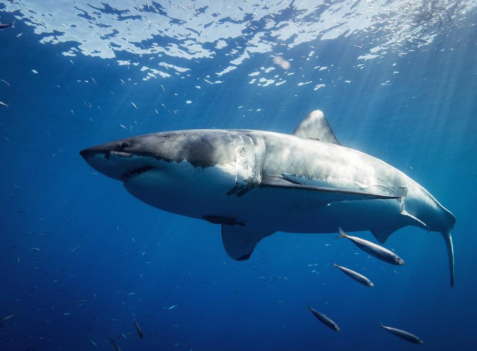

Sharks
Feared by most, loved by some and hunted by many, sharks are one of the most mysterious groups of creatures roaming the Earth today.
An ocean is a body of water that composes much of a planet's hydrosphere.[1] On Earth, an ocean is one of the major conventional divisions of the World Ocean.

Feared by most, loved by some and hunted by many, sharks are one of the most mysterious groups of creatures roaming the Earth today.
Whales are distributed throughout the world’s oceans and seas, from the Equator to the polar ice, except for the landlocked Caspian and Aral seas.


Dolphins will also follow seabirds, other whales and fishing boats to feed on the fish the birds scare to the surface or discard.
The more than 170 species of fish collectively known as anthias are among the most abundant and wide-spread species found on coral reefs.